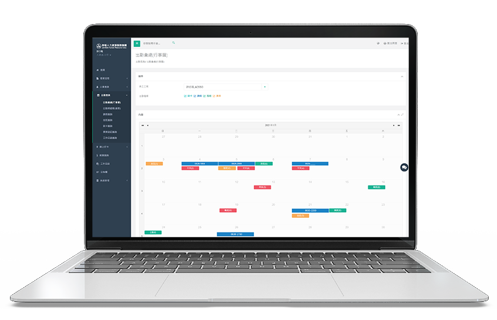
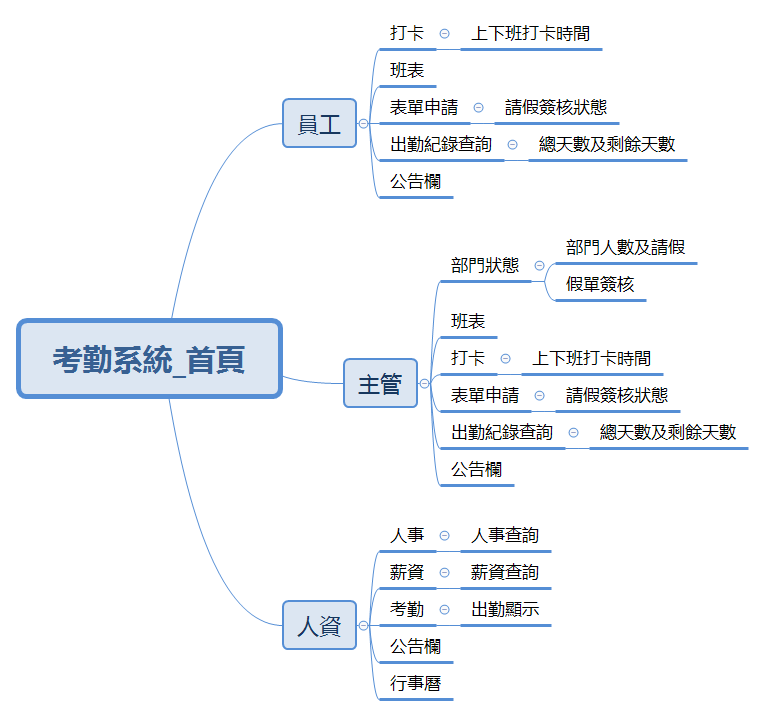
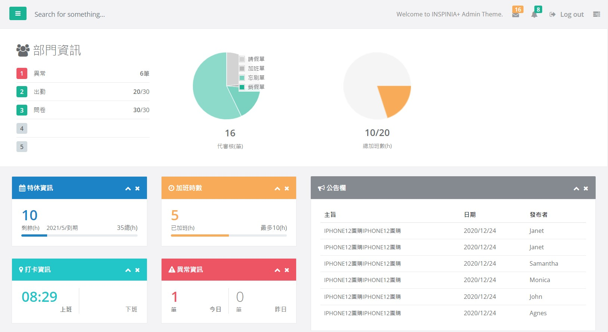
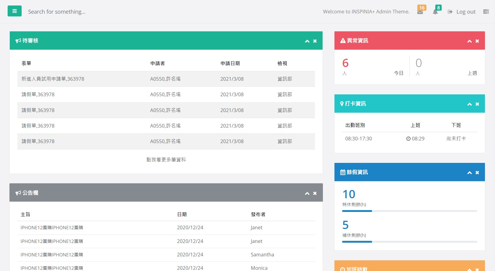
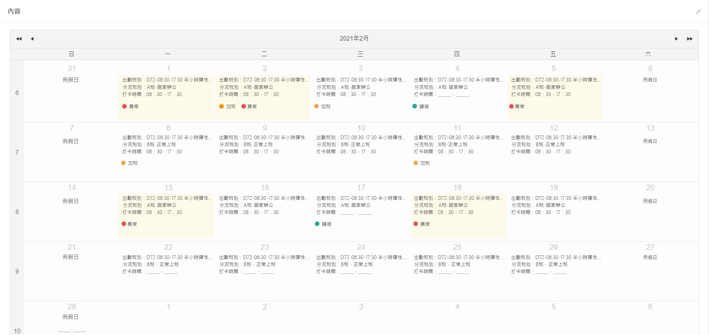
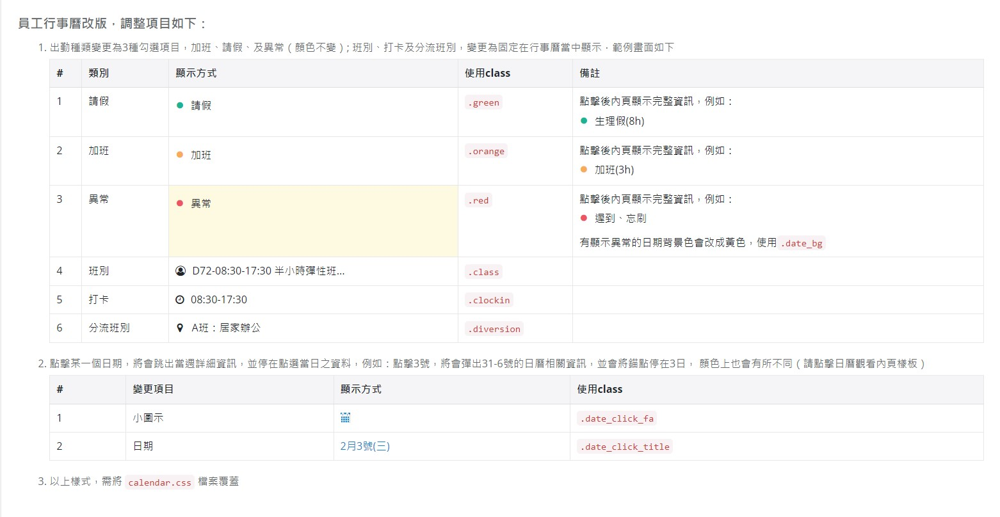
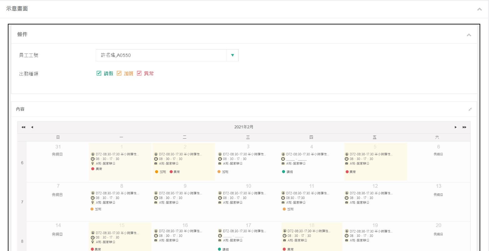
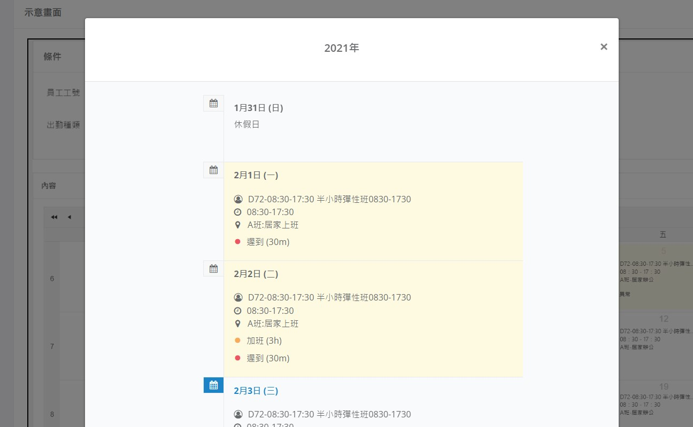

員工Portal網站
是一個結合人事查詢、出勤查詢、薪資查詢、表單申請..等功能的系統，根據員工、主管及HR賦予不同角色的預覽權限， 在這個系統中，除了公司人員相關資料查詢與修改，還能夠設置公司公告訊息讓全體員工得知消息，系統也有相對應的通知提醒， 讓使用本系統的使用者黏著度提升。
專案角色：產品視覺設計、UI/UX設計，且與工程師一同討論功能效果呈現及可執行方案

Portal－首頁設計
首頁架構
針對此系統有員工、主管及人資(HR)使用角色之不同，從三種角色想要在首頁得到什麼資訊、以解決什麼問題或是處理什麼問題著手，
因此衍生出首頁功能架構。

資訊統整、設計構思
由功能架構構想三種使用者資訊呈現方式及整個網站配色，首頁用色以多種顏色顯示不同資訊，也會讓整個冰冷的系統感受上較為活潑。
對於員工而言，使用此系統不外乎以個人資訊以及表申請為顯示的重點，因此將特休、補休、打卡資訊以及表單申請進度顯示於首頁中； 而對主管跟HR而言，使用視角除了個人資訊外，還包含部門與全公司的大視角，因次在主管與HR首頁中多了部門與公司資訊統整於最上方， 讓使用者一登入此系統就得一手掌握相關資訊。
由此些特點特性，才有員工、主管HR首頁的誕生。
對於員工而言，使用此系統不外乎以個人資訊以及表申請為顯示的重點，因此將特休、補休、打卡資訊以及表單申請進度顯示於首頁中； 而對主管跟HR而言，使用視角除了個人資訊外，還包含部門與全公司的大視角，因次在主管與HR首頁中多了部門與公司資訊統整於最上方， 讓使用者一登入此系統就得一手掌握相關資訊。
由此些特點特性，才有員工、主管HR首頁的誕生。
成果呈現
主管、HR首頁

員工首頁

員工行事曆功能
此功能為此系統使用平率較高的功能之一，本功能由行事曆呈現個人出勤、加班、刷卡、請假、異常及分流上班相關資訊。
改版前UI/UX問題
- 因出勤類別過多，顏色管理有做出效果，但顏色使用上比重過多，造成視覺上難以聚焦。
- 此功能僅能閱讀，不能針對出勤做後續功能操作。
改版構思
在上述提至問題，能夠查覺到資訊分類不夠明確，那些顯示為主要、次要又或者為重要資訊？
只要以此觀點做為出發，UI就能夠改善呈現及顏色使用癥結點。
然而在UX上，需考量到使用者至此功能除了閱讀之外，還需什麼功能，來滿足他們使用目的？
因此在這個部分增加當天呈現異常日期， 皆顯示造成異常問題之連結(例：請假申請、加班申請..等)，讓使用者做後續處理。
只要以此觀點做為出發，UI就能夠改善呈現及顏色使用癥結點。
然而在UX上，需考量到使用者至此功能除了閱讀之外，還需什麼功能，來滿足他們使用目的？
因此在這個部分增加當天呈現異常日期， 皆顯示造成異常問題之連結(例：請假申請、加班申請..等)，讓使用者做後續處理。
prototype

解決套版問題
因此行事曆使用元件為Telerik，在設計端無法實際在aspx直接寫下元件樣式，以及類別顏色顯示，為了解決此問題安綺使用HTML寫下此行事曆使用到之style規範，並寫出相對應之說明，
讓工程師能夠了解什麼類別使用什麼class，以及注意事項與功能呈現。



下一個專案：履歷系統